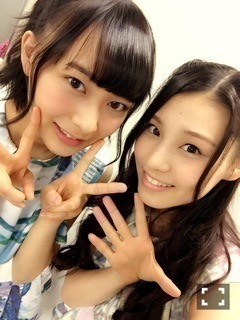

| 2015/10 31 Sat | いおりちゃん_(．．*)vol.49 |
みなさんこんばんはー！
高校3年生 17歳
さがらいおりです！
★trick or treat☆
お菓子は
昨日たくさん貰ったのでいりません。
でも大好きです♡
アンダーライブ4thシーズン
無事終わりました！
今回のライブはMCが多く
先輩達に囲まれながら
私が回したり
自分からも入っていかなきゃいけなかったりと
色々考えたライブでした＞＜
でもパフォーマンスしてる時は
本当に楽しかったし、
距離が近いと
サイリウムの揺れが揃ってるから
それが私は嬉しくて
「あーいいな、」って思うんです
最近花奈さんとお仕事が
一緒のことが多くて
距離が縮まった気がしてます♡
そして最終日には「嫉妬の権利」を
ライブで初披露しましたが、
やっぱり前で踊りたいって思いました
まだまだこれから
頑張ります

~いおり庵~
 新しいハートマーク何の曲でやってたの？
新しいハートマーク何の曲でやってたの？
シャキイズムで
純奈と最後にやってたよ♡
気付いた方いるかな？
休みの日は何してるの？
映画観たり
本読んだり
スマホゲームしてる
13枚目発売になりましたー！
嫉妬の権利は全typeに収録されてます♪♪
私の個人PVは
type-Cに入っているので
ぜひ見てみて下さい！
個人PVでバスケしてるんですけど
久しぶりですごい楽しかった♪♪
あ、前に言った
アカシックさんのミニアルバム
2枚買っちゃいました♡
全然違うけど
シルバニアファミリーが
また欲しくなってきた、、
 テレビ埼玉
テレビ埼玉
サガラとキヨトの乃木坂ぷぷぷ
今日の24:30～です(*^^)v
今週のゲストも
真夏さんと花奈さんですっ
またまた
たくさんの芸人さんに
来ていただけましたm(_ _)m
観てね♪♪
11月3日の握手会
少し遅れたコスプレ着ます。。。
お楽しみに～ヾ(＠⌒ー⌒＠)ノ
i o r i .

コメント(266)
2015/10/31 22:00